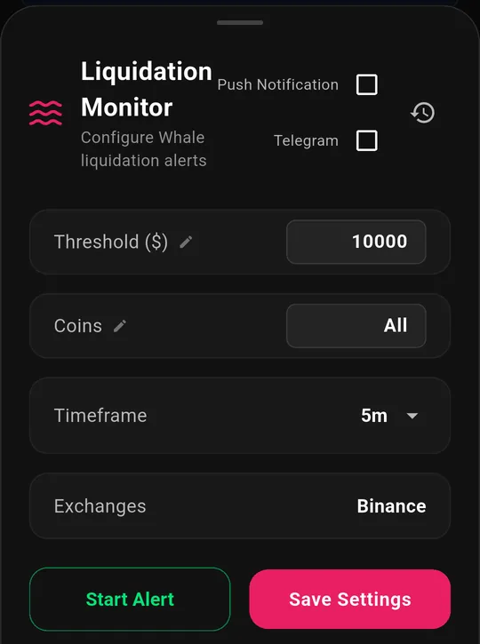

Crypto Liquidation Alerts Explained (And How to Use Them)
A $4 million liquidation does not just close one trader's position. It dumps $4 million of forced market orders into the book in seconds, and those orders move price into other people's stop levels, which triggers more liquidations.
That is why crypto liquidation alerts matter. They are one of the few feeds that tell you why a candle is moving, not just that it moved.
This guide explains what a liquidation actually is, how to read long versus short liquidations, what threshold to set, and how to get the alerts without your phone buzzing all day.
What Is a Liquidation?
Leverage is borrowed money. When you open a 10× long, most of that position is not yours, and the exchange will not let you lose their share.
Once price moves against you far enough that your margin can no longer cover the loss, the exchange stops asking. It force-closes your position. That forced close is a liquidation. On Binance, for example, liquidation is triggered by mark price rather than last price, and the engine first tries to reduce the position with a large market order before anything reaches the insurance fund (see Binance's liquidation documentation).
Two things follow from that, and both matter for trading:
- A liquidation behaves like a market order, not a limit order. It takes whatever price the book offers. Size plus urgency equals slippage.
- Liquidations cluster. Leveraged traders pile into similar levels, so one liquidation pushes price into the next batch. That is a liquidation cascade, and it is what produces the long wicks you see on the chart.
Long vs Short Liquidations: Reading the Direction
Every liquidation alert has a direction, and this is the part people misread.
| Alert says | What actually happened | Market pressure |
|---|---|---|
| LONG liquidated | A leveraged buyer was force-sold out | Selling pressure |
| SHORT liquidated | A leveraged seller was force-bought out | Buying pressure |
A long liquidation is a forced sell. A short liquidation is a forced buy.
So a screen full of long liquidations means price just fell hard enough to wipe out buyers, and that wave of forced selling is itself pushing price lower. A screen full of short liquidations is the fuel behind a sharp squeeze upward.
Where it gets interesting: a cascade is a burst of forced flow, not a burst of conviction. Nobody in that cascade chose to sell at that price. Once the forced orders are done, the pressure that created the move disappears, which is why violent liquidation wicks often retrace. Often, not always.
What the Alerts Are Actually Watching
BitLogic's Liquidation Monitor reads Binance's live liquidation stream: the exchange's own public feed of forced orders, not an estimate.
Each event carries a price and a quantity. Multiply them and you have the dollar value of the position that just got wiped out. If that value clears your threshold, you get an alert with the symbol, the direction and the size. Treat the feed as a strong read on forced-flow pressure, not as an audited ledger of every liquidation.

You can screen the whole market or narrow to specific coins, and route alerts to push notifications, Telegram, or both. Download BitLogic free on Google Play to get liquidation alerts free.
Choosing a Threshold That Isn't Noise
This is the setting that decides whether crypto liquidation alerts are useful or unbearable.
| Threshold | What you'll see | Suits |
|---|---|---|
| $1+ | Nearly every liquidation | Nobody: this is a firehose |
| $10,000 | Steady flow across majors and alts | Active intraday traders |
| $50,000 | Meaningful single positions | Swing traders |
| $100,000 | Notable events only | Most people |
| $500,000 | Large players getting wiped | Position traders |
| $1,000,000 | Market-moving events | Anyone who wants a quiet phone |
A practical rule: start high and walk it down. Set $100,000, live with it for a week, and lower it only if you genuinely wanted more. Starting at $1 teaches you to swipe alerts away without reading them, which defeats the entire point.
Two more calibration notes:
- Scale to the coin. A $50,000 liquidation is routine in BTC and remarkable in a small-cap alt. If you trade alts, a lower threshold plus a coin filter beats a high global one.
- Volatility changes the baseline. What was rare last month can be constant during a violent week. Revisit the number.
Reading a Real Alert
An alert arrives: BTCUSDT · LONG · $2,450,000.
Unpacked, that says a leveraged long position worth $2.45 million was force-closed: sold immediately, at whatever the order book would take. Not a trader deciding to exit. A position removed by the exchange.
Now the useful questions:
- Is it alone, or the fifth in two minutes? One large liquidation is an event. Five in sequence is a cascade, and cascades feed themselves.
- Which direction dominates? A run of LONG liquidations is forced selling; a run of SHORT liquidations is forced buying. Mixed directions usually just mean volatility, not a one-sided flush.
- How big is it for this coin? $2.45 million in BTC is meaningful but ordinary. The same number in a mid-cap alt can be a large share of the day's real liquidity.
The feed is per-event, not a rolled-up hourly total, so sequence and timing are visible, which is exactly what tells a cascade apart from a single whale being stopped out.
How to Use Liquidation Alerts
Liquidation data is context, not a signal by itself. Three honest uses:
- Explaining a move you already see. Price dropped 3% and you do not know why. A cluster of long liquidations tells you it was forced selling rather than a news-driven repricing, which is a different thing to trade against.
- Spotting exhaustion. Cascades burn out. When a run of liquidations thins while price stops making new lows, the forced flow is finishing. That is information about supply, not a buy signal.
- Sizing your own risk. If the feed shows repeated large liquidations in a coin you hold, the market is telling you how crowded and how leveraged that position is. That is a reason to check your own leverage.
What liquidation alerts will not do is tell you where price goes next. Anyone selling you that certainty is selling something else. For the other half of the crowding story, see our funding rate alerts explainer: funding shows the crowd building, liquidations show it being cleared out.
Getting Them Without the Spam
Alert fatigue kills alert systems. Three things keep this feed readable:
- Tiered thresholds. You subscribe to a size band, so a $12,000 liquidation never reaches someone who asked for $500,000 events.
- Deduplication. Every alert carries a stable ID, so the same event does not arrive twice when the app is running in more than one state.
- Delivery you actually read. Push notifications work, but they compete with everything else on the phone. On Pro, alerts also go to Telegram, where they arrive on your desktop too.

Telegram delivery is part of BitLogic Pro, which starts with a 14-day free trial.
FAQ
What is a good liquidation alert threshold?
Start at $100,000 and adjust after a week of real use. Intraday traders often settle near $10,000-$50,000; position traders prefer $500,000 or more. Match it to how often you actually want to look at your phone.
Does a long liquidation mean price is going down?
It means a forced sell just hit the market, which is downward pressure in that moment. It does not predict the next move, and because the selling was forced rather than chosen, sharp liquidation moves frequently retrace part of the distance.
Which exchanges do the alerts cover?
BitLogic's Liquidation Monitor reads Binance's live public liquidation stream.
Can I get alerts for only one coin?
Yes. Set the coin filter in the Liquidation Monitor settings to watch specific symbols instead of the whole market.
Do I need to keep the app open?
No. Alerts are delivered as push notifications with the app closed, and on Pro they also arrive in Telegram.
The Bottom Line
Crypto liquidation alerts answer a question charts cannot: was this move chosen, or was it forced?
Set a threshold high enough that every alert is worth reading, watch the direction rather than just the size, and treat cascades as information about pressure, not as a prediction.
Download BitLogic free on Google Play, turn on the Liquidation Monitor in under a minute, and start the 14-day Pro trial when you want alerts in Telegram.
Educational content only, not financial advice. Leverage is how most traders lose money quickly.